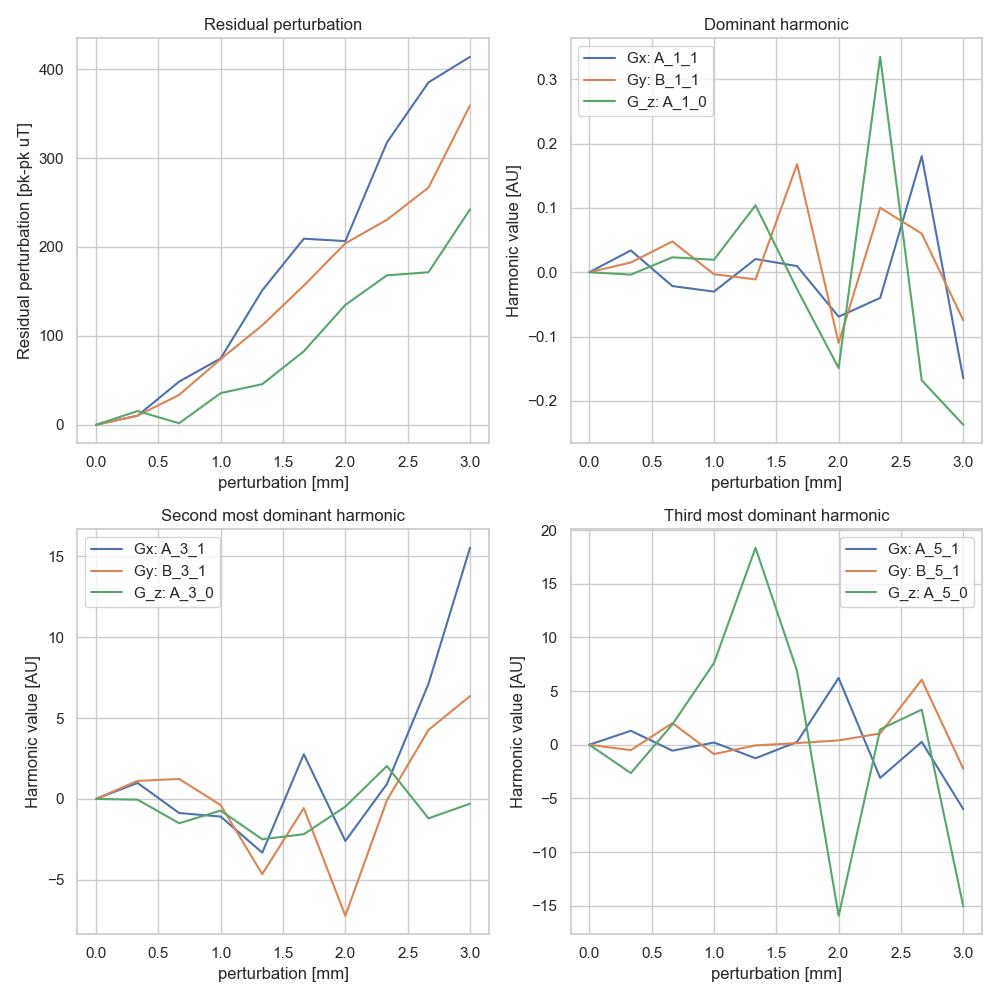

Harmonics perturbation analysis
Our workflow relies on extracting the coordinates of markers from MRI images and using them to characterize distortion and/or spherical harmonics. However, finding the marker centroids is not a trivial task and is hindered by:
Low SNR
Large voxel sizes
Other things I can’t think of
The purpose of this analysis is therefore to assess the stability of spherical harmonics as larger and larger errors are introduced into the extracted marker positions. We will be using the perturb_marker_positions method.
ToDo: get an estimate of marker volume
Comparison of harmonics and residuals
The below plot shows the percentage in residual (perurbation we are unable to fit with spherical harmonics) and the first, second, and third most dominant harmonic for each of the gradient fields.
What we see:
by far the biggest error is in the residual. This is good, since we have introduced non-physical errors into the data, the residual should go up. It’s also comforting that it’s quite low to start with: this suggests the inherent error in marker segmentation is reasonably low.
The dominant harmonic (which is the harmonic representing the gradient itself) is quite stable, staying at a less than 1% error. However, the other harmonics show more variation, up to ~20%.
Even then, for random perturbations less than 1 mm, the percentage error is less than 10%

comparison of predicted distortion with different sets of harmonics
We can use a set of gradient harmonics to create a report and then we can use this function to compare the reconstructed data. The below two plots show the reports with random 1mm perturbations and random 3 mm perturbations.
From this data, we can see the following:
In general, the reconstructions errors are around the same ammount as the random noise. e.g. for 1 mm perturbation, the majority of the reconstructed data is also within 1mm - and for 3 mm perturbation, the majority of the data is within 3 mm
However, there are also outlier errors well above the introduced error.
Since these results are from relatively few markers arrange on the surface of a sphere, I would hypothesize that this phantom would be especially sensitive to these errors; it would be interesting to repeat this with a more densely sampled phantom


code
probably won’t keep this here long term but for now:
import numpy as np
from mri_distortion_toolkit.MarkerAnalysis import MarkerVolume, MatchedMarkerVolumes
from pathlib import Path
from mri_distortion_toolkit.FieldCalculation import ConvertMatchedMarkersToBz
from mri_distortion_toolkit.Harmonics import SphericalHarmonicFit
from copy import deepcopy
from matplotlib import pyplot as plt
def calculate_harmonics(ground_truth_volume, forward_volume, back_volume=None, n_order=8):
# match the markers
matched_markers = MatchedMarkerVolumes(ground_truth_volume, forward_volume, sorting_method='radial',
ReferenceMarkers=11,
WarpSearchData=True, ReverseGradientData=back_volume)
matched_markers.MatchedCentroids.to_csv('MatchedMarkerVolume.csv')
# calculate B fields
B_fields = ConvertMatchedMarkersToBz(matched_markers.MatchedCentroids, forward_volume.dicom_data)
# calculate harmonics
# B0
try:
B0_data = B_fields.MagneticFields[['x', 'y', 'z', 'B0']]
B0_data = B0_data.rename(
columns={"B0": "Bz"}) # spherical harmonics code expects to receieve one field called Bz
B0_Harmonics = SphericalHarmonicFit(B0_data, n_order=n_order, r_outer=150)
except KeyError:
B0_Harmonics = None
# Gx
GradXdata = B_fields.MagneticFields[['x', 'y', 'z', 'B_Gx']]
GradXdata = GradXdata.rename(
columns={"B_Gx": "Bz"}) # spherical harmonics code expects to receieve one field called Bz
G_x_Harmonics = SphericalHarmonicFit(GradXdata, n_order=n_order, r_outer=150)
G_x_Harmonics.harmonics.to_csv('G_x_harmonics.csv')
# Gy
GradYdata = B_fields.MagneticFields[['x', 'y', 'z', 'B_Gy']]
GradYdata = GradYdata.rename(
columns={"B_Gy": "Bz"}) # spherical harmonics code expects to receieve one field called Bz
G_y_Harmonics = SphericalHarmonicFit(GradYdata, n_order=n_order, r_outer=150)
G_y_Harmonics.harmonics.to_csv('G_y_harmonics.csv')
# G_z
GradZdata = B_fields.MagneticFields[['x', 'y', 'z', 'B_Gz']]
GradZdata = GradZdata.rename(
columns={"B_Gz": "Bz"}) # spherical harmonics code expects to receieve one field called Bz
G_z_Harmonics = SphericalHarmonicFit(GradZdata, n_order=n_order, r_outer=150)
G_z_Harmonics.harmonics.to_csv('G_z_harmonics.csv')
return B0_Harmonics, G_x_Harmonics, G_y_Harmonics, G_z_Harmonics
def normalise_array_columnwise(array_to_normalise):
for i, column in enumerate(array_to_normalise.T):
column = (column - column[0]) * 100 / column[0]
array_to_normalise[:, i] = column
return array_to_normalise
'''
data is here
https://cloudstor.aarnet.edu.au/plus/apps/files/?dir=/Shared/MRI-Linac%20Experimental%20Data/Goam2%5EMr/20220428%20MR%20Linac%5ETest&fileid=6603039901
'''
data_loc = Path(r'X:\PRJ-RPL\2RESEARCH\2_ProjectData\MRI-Linac\20220428 MR Linac^Test')
all_scans = {'1': '01 localiser_gre',
'2': '02 gre_trans_AP_330',
'3': '03 gre_trans_PA_330',
'4': '04 gre_sag_HF_330',
'5': '05 gre_sag_FH_330',
'6': '06 gre_cor_RL_330',
'7': '07 gre_cor_RL_330',
'8': '08 gre_trans_AP_330_F_reset',
'9': '09 gre_trans_AP_330',
'10': '10 gre_trans_AP_330',
'11': '11 gre_trans_PA',
'12': '12 gre_sag_HF',
'13': '13 gre_sag_FH',
'14': '14 gre_cor_RL',
'15': '15 gre_cor_LR',
'16': '16 gre_tran_AP_large_BW',
'17': '17 gre_tran_PA_large_BW',
'18': '18 gre_trans_PA_reshim_refreq',
'19': '19 gre_trans_AP_reshim_refreq'}
correct_FW = True
ct_volume = MarkerVolume('CT.mrk.json')
forward_volume = MarkerVolume(data_loc / all_scans['14'] / 'Original', gaussian_image_filter_sd=1,
n_markers_expected=336, cutoff_point=50, verbose=False, r_max=165,
correct_fat_water_shift=correct_FW, fat_shift_direction=-1)
Dominant = []
Second = []
Third = []
Residual = []
perturbations = np.linspace(0, 3, 10)
B0_Harmonics_gt, G_x_Harmonics_gt, G_y_Harmonics_gt, G_z_Harmonics_gt = calculate_harmonics(ct_volume, forward_volume)
for perturbation in perturbations:
forward_volume_perturb = deepcopy(forward_volume)
forward_volume_perturb.perturb_marker_positions(perturbation)
B0_Harmonics, G_x_Harmonics, G_y_Harmonics, G_z_Harmonics = calculate_harmonics(ct_volume, forward_volume_perturb)
# record the data for plotting
Residual.append([G_x_Harmonics._residual_pk_pk, G_y_Harmonics._residual_pk_pk, G_z_Harmonics._residual_pk_pk])
Dominant.append([G_x_Harmonics.harmonics.A_1_1, G_y_Harmonics.harmonics.B_1_1, G_z_Harmonics.harmonics.A_1_0])
Second.append([G_x_Harmonics.harmonics.A_3_1, G_y_Harmonics.harmonics.B_3_1, G_z_Harmonics.harmonics.A_3_0])
Third.append([G_x_Harmonics.harmonics.A_5_1, G_y_Harmonics.harmonics.B_5_1, G_z_Harmonics.harmonics.A_5_0])
# transform lists to relative values
Residual = np.array(Residual)
Residual = normalise_array_columnwise(Residual)
Dominant = np.array(Dominant)
Dominant = normalise_array_columnwise(Dominant)
Second = np.array(Second)
Second = normalise_array_columnwise(Second)
Third = np.array(Third)
Third = normalise_array_columnwise(Third)
fig, axs = plt.subplots(nrows=2, ncols=2, figsize=[10, 10])
axs[0, 0].plot(perturbations, Residual)
axs[0, 0].set_title('Residual perturbation')
axs[0, 0].set_xlabel('perturbation [mm]')
axs[0, 0].set_ylabel('Residual perturbation [pk-pk uT]')
axs[0, 1].plot(perturbations, Dominant)
axs[0, 1].set_title('Dominant harmonic')
axs[0, 1].legend(['Gx: A_1_1', 'Gy: B_1_1', 'G_z: A_1_0'])
axs[0, 1].set_xlabel('perturbation [mm]')
axs[0, 1].set_ylabel('Harmonic value [AU]')
axs[1, 0].plot(perturbations, Second)
axs[1, 0].set_title('Second most dominant harmonic')
axs[1, 0].legend(['Gx: A_3_1', 'Gy: B_3_1', 'G_z: A_3_0'])
axs[1, 0].set_xlabel('perturbation [mm]')
axs[1, 0].set_ylabel('Harmonic value [AU]')
axs[1, 1].plot(perturbations, Third)
axs[1, 1].set_title('Third most dominant harmonic')
axs[1, 1].legend(['Gx: A_5_1', 'Gy: B_5_1', 'G_z: A_5_0'])
axs[1, 1].set_xlabel('perturbation [mm]')
axs[1, 1].set_ylabel('Harmonic value [AU]')
plt.tight_layout()
# OK, now let's make two report, one with the unperturbed harmonics and one with the perturbed harmonics and compare
from mri_distortion_toolkit.Reports import MRI_QA_Reporter
from mri_distortion_toolkit.utilities import compare_recon_report_with_ground_truth_report
unperturbed_report = MRI_QA_Reporter(gradient_harmonics=[G_x_Harmonics_gt.harmonics,
G_y_Harmonics_gt.harmonics,
G_z_Harmonics_gt.harmonics],
dicom_data=forward_volume.dicom_data, r_outer=150)
perturbed_report = MRI_QA_Reporter(gradient_harmonics=[G_x_Harmonics.harmonics,
G_y_Harmonics.harmonics,
G_z_Harmonics.harmonics],
dicom_data=forward_volume.dicom_data, r_outer=150)
compare_recon_report_with_ground_truth_report(unperturbed_report, perturbed_report)